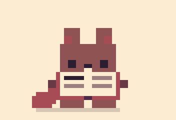
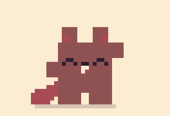
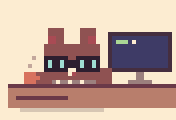
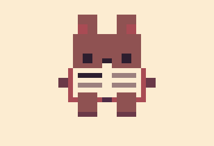
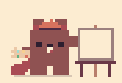

Beaver Reader
A cozy EPUB and PDF reader with a pixel bookcase. The beaver climbs it, dusts it and reads along with you.
- Shelves you can drag books between
- Highlights, notes and read aloud
- Reading stats, goals and streaks

Little pixel apps with a beaver in them :) Free, no account, works offline, in 10 languages, and your stuff stays on your device.

A cozy EPUB and PDF reader with a pixel bookcase. The beaver climbs it, dusts it and reads along with you.

A pomodoro timer with a lo-fi radio. The beaver works while you work, takes breaks with you and naps at night.
Pick an app. Half a minute each, with sound. The music is from Beaver Pod, the lo-fi radio in Beaver Focus :)
No app store needed. A few taps and the app gets its own icon, opens full screen like any other app, and works without internet too :) Do it once for each app you want.
Open the app in Safari.Beaver ReaderBeaver Focus
Tap ··· at the bottom right.Don't see it? Tap the Share button (a square with an arrow) and skip to step 4. On an iPad it's at the top.
Tap Share.
Scroll down a bit and tap Add to Home Screen.
Leave Open as Web App on, then tap Add.
That's it! The beaver is on your home screen. Tap him to open the app.
Open the app in Chrome.Beaver ReaderBeaver Focus
Tap ⋮ at the top right.
Tap Add to home screen.On some phones it says Install app.
Tap Install.
That's it! The beaver is on your home screen. Tap him to open the app.
Samsung Internet? Tap the ☰ menu at the bottom, then Add page to, then Home screen.
Open the app in Chrome or Edge.Beaver ReaderBeaver Focus
Click the install button at the right end of the address bar: a little screen with an arrow.
Click Install.
That's it! It opens in its own window, and you'll find the beaver in your Start menu, taskbar or Dock.
Mac with Safari? Open the app, then choose File and Add to Dock. Firefox can't install apps, so open the link in Chrome or Edge instead.
Yes. Every Beaver App is free: no ads, no subscription and nothing to unlock.
No. Open the app and start. You only sign in if you want to sync between your devices, and that's up to you.
On your own device, inside your browser. If you turn on sync, a copy goes to your own Google Drive or GitHub, where only you can see it. There's no Beaver Apps server in between, so we never get a copy. Looking up a word in Beaver Reader sends just that word to Wiktionary for its definition. The privacy page has all the details.
Yes. Add it to your home screen or desktop (see Install) and it works offline. Only sync and looking up a word need a connection.
All of them. Each app has a layout for phones and one for computers, and it runs in any modern browser.
Turn on sync in Settings. Beaver Reader keeps your books, your place, highlights, notes and reading stats in your own Google Drive (or a private GitHub repo), and they follow you to every device. Beaver Focus keeps your stats and settings in a private gist on your own GitHub. Either way, it's your account and only you can see it.
Both speak English, Svenska, Dansk, Norsk, Suomi, Deutsch, Español, Français, 中文 and 日本語. They start in your device's language, and you can switch in Settings.
No, and they don't need to be. You add them straight from your browser in a few taps, and they get their own icon like any other app. The install guide shows how.
Tell the beaver :) Open an issue on the app's GitHub page: Beaver Reader or Beaver Focus. You'll need a free GitHub account.
Yes, for anything non-commercial: the apps are free to use, change and share under the PolyForm Noncommercial licence. Nobody may sell them or use them to make money.

Hi, I'm the beaver :) I have lots of jobs, and I keep getting new ones. In Beaver Reader I'm the librarian: I climb the bookcase, dust the shelfs and read along with you. In Beaver Focus I sit at my desk and work rigth beside you. In between I make brekfast, build dams and take a lot of naps. Evry job is better with a buddy.

I made Beaver Apps because the beaver is so cute, and because I wanted functional apps that don't suck or feel overwhelming. Free, no accounts, nothing following you around. So I drew a beaver and gave him a job. Then another one. He's going to have a lot of them.
BwunLevain on GitHub